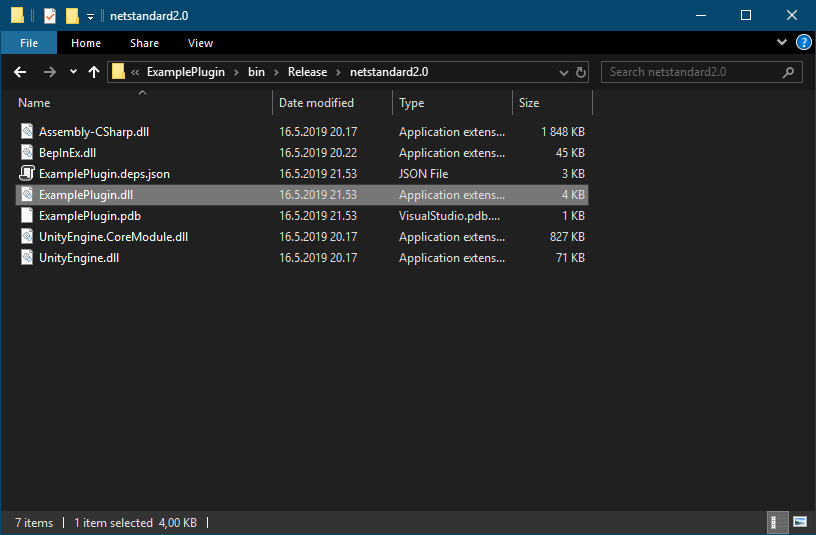
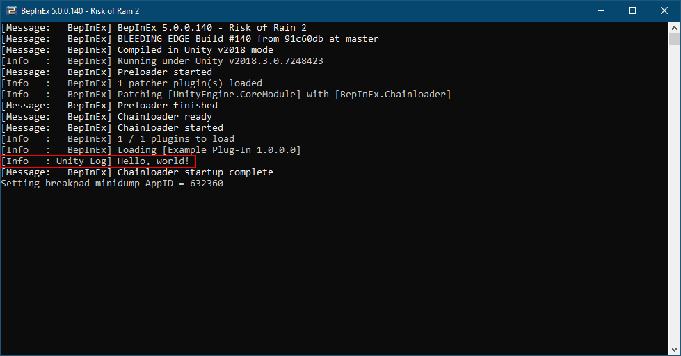

Writing a basic plug-in
In this step we continue by writing code for a simple plug-in that displays a message in the console.
Defining the plug-in class
Continuing from the previous step, rename Class1.cs to the name of your plugin. In this instance, we'll rename ours to ExamplePlugin.cs.
Open the source file. You'll see there is already some generic boilerplate code for a class.
Edit the class to inherit from BaseUnityPlugin and add BepInPlugin attribute to the class:
using System;
using BepInEx;
namespace ExamplePlugin
{
[BepInPlugin("org.bepinex.plugins.exampleplugin", "Example Plug-In", "1.0.0.0")]
public class ExamplePlugin : BaseUnityPlugin
{
}
}
And that is everything you have to do in order for a class to be a valid plug-in! Note that the name of the namespace and the plug-in class are likely different in your case, so if you copy-paste, you might want to edit them.
Next, we'll dive a bit deeper into what all of this means.
Specifying metadata with attributes
By itself, a simple class that inherits BaseUnityPlugin doesn't tell BepInEx much. However, BepInEx has to know some information about the class in order to know how to load the plug-in. This is done by specifying C# attributes to the class as we defined above.
Let's go over some of the most important attributes you might want to use. For more attributes and exact documentation, visit the API docs.
Basic information about the plug-in
The most crucial attribute is BepInPlugin. Without it, BepInEx will simply ignore loading of the plug-in!
The attribute consists of three string parameters that are:
| Parameter name | Description |
|---|---|
GUID |
A unique identifier of the plugin. It absolutely must be unique as BepInEx uses it to detect duplicate plugins and sort dependencies. It is recommended (but not mandatory) to use the reverse domain name notation for GUIDs. |
Name |
A human-readable name of the plug-in. |
Version |
Version of the plugin. The version format must be of the form major.minor[.build[.revision]] (i.e. a format that System.Version can parse). |
Here's a simple example of the attribute:
[BepInPlugin("org.bepinex.plugins.exampleplugin", "Example Plug-In", "1.0.0.0")]
public class ExamplePlugin : BaseUnityPlugin
Specifying dependencies on other plug-ins
Sometimes you might want to load some plug-ins before other ones. Moreover, in some cases you want to ensure that a user has installed some other plug-in in order for yours to function.
You can specify dependencies on other plug-ins with BepInDependency attribute.
You can specify the attribute multiple times for multiple dependencies.
The attribute consists of only two parameters:
| Parameter name | Description |
|---|---|
DependencyGUID |
The GUID of the plug-in that yours depends on. Must be in the exact same format and case as defined in the dependency. |
Flags |
Optional. Specifies a flag from BepInDependency.DependencyFlags that tells how to handle missing dependencies. A soft dependency means that the plug-in can be loaded even if the dependency is missing. A hard dependency means that a plug-in must be skipped if the dependency is missing. |
Here's a simple example of the attribute:
[BepInPlugin("org.bepinex.plugins.exampleplugin", "Example Plug-In", "1.0.0.0")]
// A soft dependency. Loading won't be skipped if it's missing.
[BepInDependency("com.bepinex.plugin.somedependency", BepInDependency.DependencyFlags.SoftDependency)]
// A hard dependency. Loading will be skipped (and an error shown) if the dependency is missing.
[BepInDependency("com.bepinex.plugin.importantdependency", BepInDependency.DependencyFlags.HardDependency)]
// If flags are not specified, the dependency is **hard** by default
[BepInDependency("com.bepinex.plugin.anotherimportantone")]
public class ExamplePlugin : BaseUnityPlugin
Filtering executables
In some cases you may want to allow to load the plugin only in certain games. For instance, your plug-in only works in one game and you want to prevent users from installing a plug-in into a wrong game. Alternatively, there might be multiple games in the same game folder, and you want to load your plugin only in one of those games.
You can specify what games to load the plug-in on with BepInProcess attribute.
The attribute has only one parameter: ProcessName that is simply the name of the process that the plug-in is allowed to run on (including the .exe extension).
Naturally, you can specify the attribute multiple times.
An example of the attribute usage:
[BepInPlugin("org.bepinex.plugins.exampleplugin", "Example Plug-In", "1.0.0.0")]
[BepInProcess("Risk of Rain 2.exe")]
[BepInProcess("AnotherGame.exe")]
public class ExamplePlugin : BaseUnityPlugin
Adding code to the plug-in
Under the hood, BaseUnityPlugin inherits from MonoBehaviour. This means you can access all game objects using Unity's own API.
As an example, we'll log Hello, world! text when the plug-in is starting.
For that we'll add the call into MonoBehaviour.Awake:
[BepInPlugin("org.bepinex.plugins.exampleplugin", "Example Plug-In", "1.0.0.0")]
public class ExamplePlugin : BaseUnityPlugin
{
// Awake is called once when both the game and the plug-in are loaded
void Awake()
{
UnityEngine.Debug.Log("Hello, world!");
}
}
Compiling and testing the plug-in
Once the base code of the plug-in has been written, it's time to compile and test it.
To compile the plug-in, you can either use Build > Build Solution menu option or Ctrl+Shift+B shortcut.
Once the compilation is complete, you can find you plug-in DLL in <Project Directory>\bin\Debug (or Release if you built the release build).
The name of the DLL is the same as the name of the project (not the source code file). Thus in the case of the project, the name of the plug-in DLL is ExamplePlugin.dll

To test the plug-in, move the plug-in DLL into BepInEx\plugins\<Plug-in name> folder in your target game.
Note
It is not mandatory to put plug-ins into separate folders inside BepInEx\plugins, but it is recommended.
Doing so will simplify installation and the removal process of each plug-in.
Finally, open up the game and gaze upon the BepInEx console:

Note that you have to enable the console via the configuration file to see the debug message.
Next steps
You can continue by adding more plug-ins or modifying the example plug-in!
Remember that a single DLL can contain multiple plug-in classes: that is, you can add more classes that inherit from BaseUnityPlugin and have the BepInPlugin attribute and have multiple plugins in the same DLL.
Next, we'll look at how to create and manage configuration files of the plug-in.